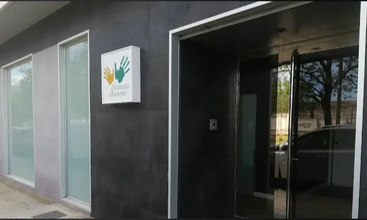

Un espacio clínico pensado para tu tratamiento.
En pleno centro de Zaragoza encontrarás una clínica tranquila, luminosa y equipada con material profesional. Cada consulta está pensada para que puedas centrarte en una sola cosa: recuperarte.

Tres razones para venir.
Lo que hace que cada visita a la clínica marque la diferencia.
Zaragoza centro
Ubicación céntrica, bien comunicada con transporte público y con opciones de aparcamiento cercano.
Sesiones de 50 minutos
Tiempo suficiente para valorar, tratar y explicar. Sin prisas y con toda la atención puesta en ti.
Trato cercano
Un fisioterapeuta, un plan y seguimiento personal. Nada de cintas transportadoras ni sesiones compartidas.
Un vistazo por dentro.
Salas privadas, luz natural y material profesional en el corazón de Zaragoza.


Todo lo necesario para tratarte bien.
La clínica está equipada con material profesional actualizado y espacios pensados para que cada tratamiento se desarrolle con la máxima calidad clínica y humana.
-
Salas privadasConsulta individual, insonorizada y con climatización, para que la sesión sea tuya de principio a fin.
-
Camillas profesionalesCamillas hidráulicas regulables que permiten trabajar cada técnica con precisión y comodidad.
-
Zona de ejercicioMaterial de fuerza, movilidad y control motor para readaptación y ejercicio terapéutico personalizado.
-
Ecógrafo y electroterapiaEcografía musculoesquelética de apoyo, TENS y ultrasonido para complementar el tratamiento manual.
-
Espacio accesibleRecepción cómoda, aseo y una sala de espera tranquila para que llegues sin estrés.
Ven a conocer la clínica.
Reserva una primera valoración y te explicaremos tu caso con tiempo. Cita previa siempre: así garantizamos que la sesión empieza y termina puntual.
- Dirección
- Zaragoza centro
- Horario
- L–V · 09–13:30 / 17–20
- Teléfono
- 608 97 30 90